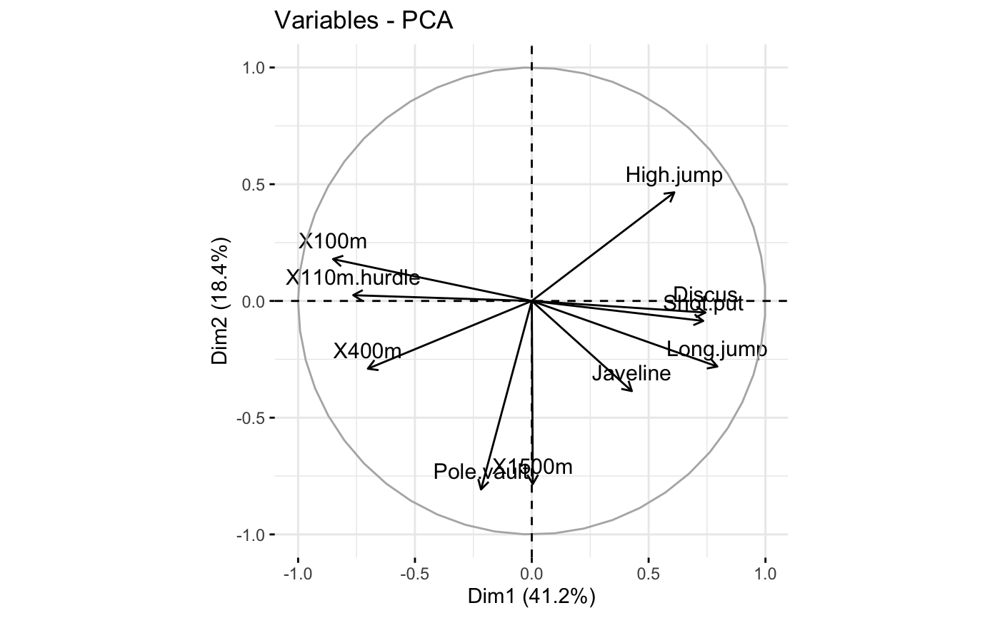

Add supplementary data to a plot
Arguments
- ggp
a ggplot2 plot.
- df
a data frame containing the x and y coordinates
- axes
a numeric vector of length 2 specifying the components to be plotted.
- geom
a character specifying the geometry to be used for the graph Allowed values are "point" or "arrow" or "text"
- color
the color to be used
- addlabel
a logical value. If TRUE, labels are added
- labelsize
the size of labels. Default value is 4
- pointsize
the size of points
- shape
point shape when geom ="point"
- linetype
the linetype to be used when geom ="arrow"
- repel
a boolean, whether to use ggrepel to avoid overplotting text labels or not. The old
jitterargument is kept for backward compatibility and is converted torepel = TRUEwith a deprecation warning.- font.family
character vector specifying font family.
- ...
Additional arguments, not used
Value
a ggplot2 plot
References
Examples
# \donttest{
# Principal component analysis
data(decathlon2)
decathlon2.active <- decathlon2[1:23, 1:10]
res.pca <- prcomp(decathlon2.active, scale = TRUE)
# Visualize variables
p <- fviz_pca_var(res.pca)
print(p)

# Add supplementary variables
coord <- data.frame(PC1 = c(-0.7, 0.9), PC2 = c(0.25, -0.07))
rownames(coord) <- c("Rank", "Points")
print(coord)
#> PC1 PC2
#> Rank -0.7 0.25
#> Points 0.9 -0.07
fviz_add(p, coord, color ="blue", geom="arrow")
 # }
# }